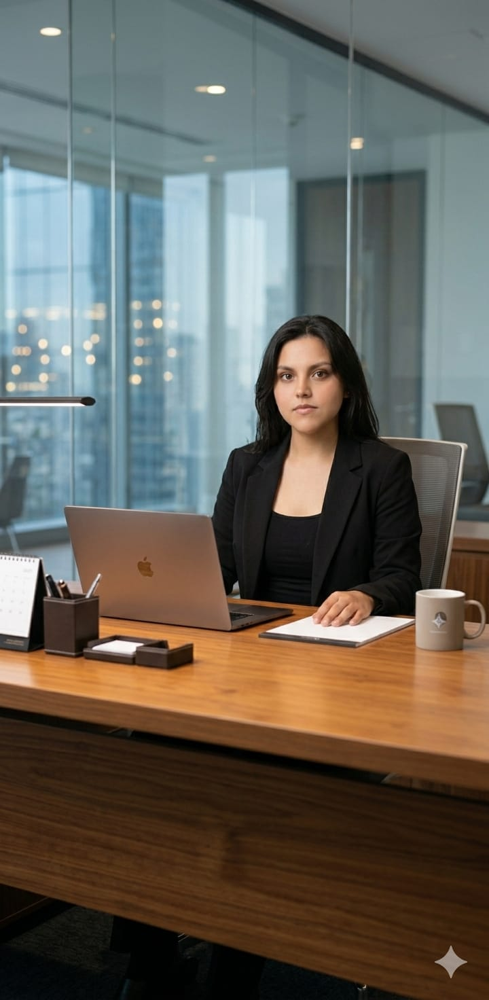

Sobre mí
Actualmente curso el tercer semestre de Ingeniería en Sistemas Informáticos, una carrera que me apasiona por el reto lógico de construir soluciones a través del código. Me considero una persona curiosa y estructurada, siempre en busca de nuevas herramientas tecnológicas que me permitan entender cómo funcionan los sistemas complejos y cómo optimizarlos para mejorar nuestro entorno.Fuera de la terminal y las líneas de comando, encuentro mi equilibrio en el deporte. El baloncesto me ha enseñado el valor de la estrategia y el trabajo en equipo, mientras que la natación es mi espacio de meditación y disciplina personal. Estas actividades me permiten desconectarme del mundo digital, dándome la energía y la claridad mental necesarias para enfrentar mis proyectos académicos.
Finalmente, mi lado más humano lo ocupan los animales, especialmente los perros y gatos. Admiro la lealtad de unos y la independencia de otros, y pasar tiempo con ellos es mi forma favorita de recargar baterías. Soy una combinación de lógica técnica, pasión deportiva y sensibilidad por la naturaleza, siempre buscando integrar esos tres mundos en mi día a día.
